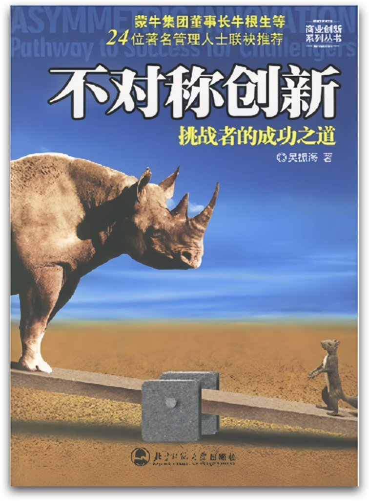
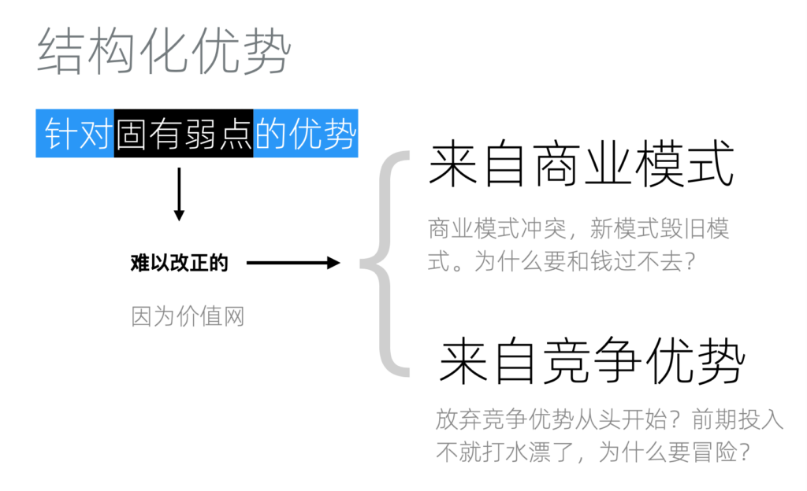
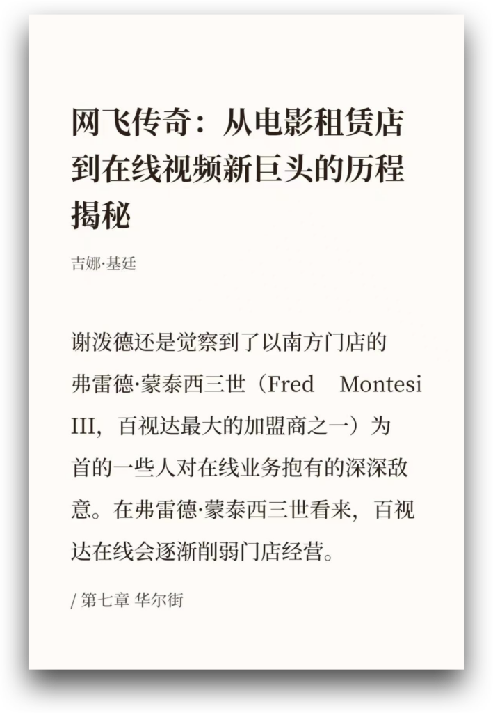
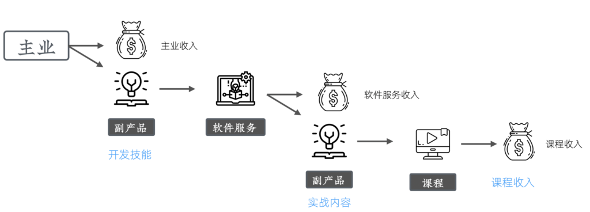
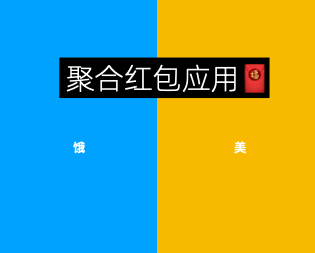
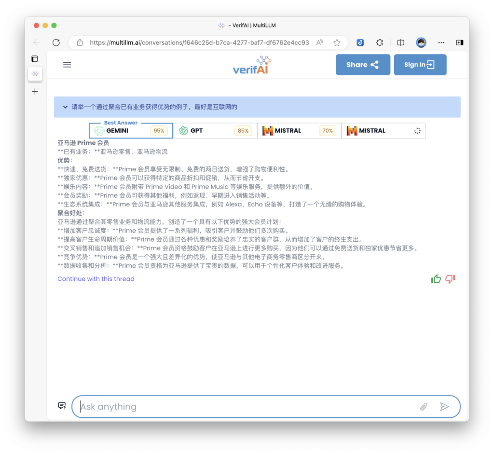
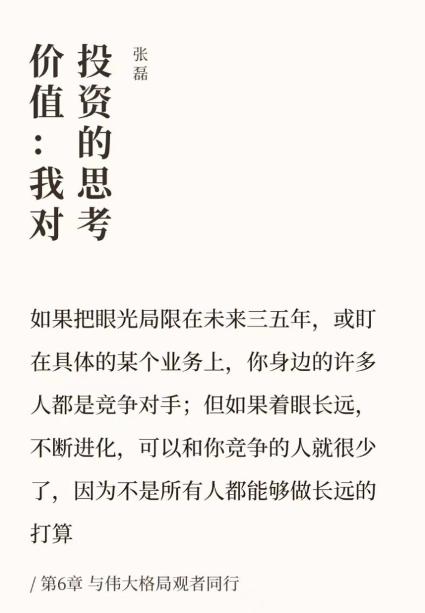
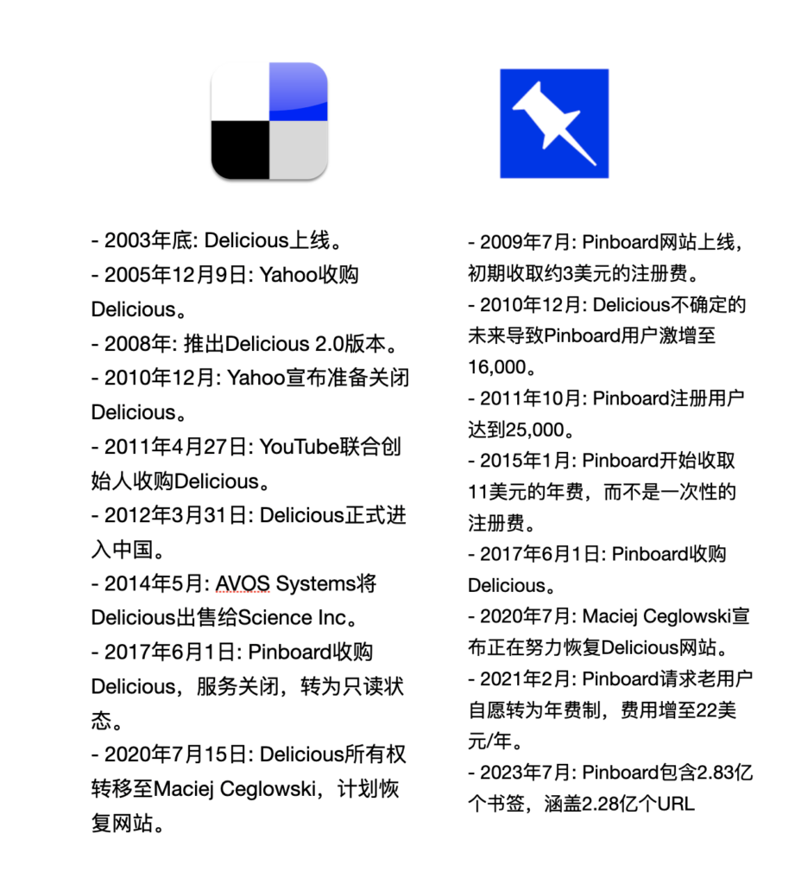
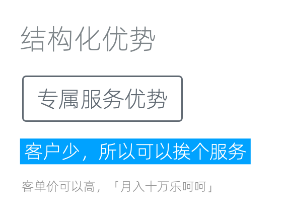

竞争策略:结构化优势
虽然不战而屈人之兵是为上策，但我们总会有直面竞争的时候，本文将讨论这种场景下的策略。
什么是结构化优势
所谓的结构化优势，是指针对竞品的「固有弱点」构建的优势。固有弱点一词，源于《不对称创新》这本有点年代的书籍。尽管我不能确定该概念是否最初由此提出，我确实是在这本书中首次接触到。

《不对称创新》
固有弱点
固有弱点是指那些难以纠正的弱点。这种难以纠正并非因为不可见，而是由于价值网络的特性。使得即使看得到，却改不了。通常，这些弱点源自两个方面：一是商业模式；二是竞争优势。

固有弱点的常见来源
来自商业模式的固有弱点
以我们之前讨论过的百视达的线上业务为例，其商业模式本身存在冲突，新模式的引入（线上业务）会摧毁旧的模式（线下门店）。这种情况下，公司会考虑，为何要为了一个（还未完全成熟的）新模式去改变旧的模式，尤其是当旧模式仍然能带来可观收入时。另一方面，即使高层下定了决心，只要价值网络没有更新，执行起来也会是困难重重。这就来自商业模式的固有弱点。

《网飞传奇》
来自竞争优势的固有弱点
当企业在其领域通过某种方式获得竞争优势时，若要求其改变竞争方式，之前的投资就会化为泡影。这其实是一种路径依赖。
许多企业在社交媒体营销上的迟钝是一个典型的例子。他们之前的营销是基于传统媒体渠道构建的，而且效果不错。当社交媒体刚兴起时，同样的钱，投放到传统渠道获得的收益更多。于是会理所当然的继续投放到传统渠道。而当社交媒体成为主流渠道时，再切换渠道已经失去了很多优势。
一人企业特有的结构化优势
可以看到，结构化优势是在知己知彼的基础上，有针对性的构建的。这里我们从一人企业出发，针对大企业和创业公司，总结了一些结构化优势。你当然可以从自己的具体情况出发，构建自己特有的结构化优势。
副产品优势
这是一人企业以副业形态运行时时特有的、特别好用的优势。我在《程序员如何优雅地挣零花钱》和微博、推特上不断提及，甚至将其作为《精益副业》一书的中心概念。
它的核心逻辑是：利用主业产生的副产品或中间产品来创造收益，由于这部分产品的成本几乎为零，竞争对手很难与之竞争。
我们来看一个对程序员讲很实用的例子。

复合副产品优势
我们假设他在一家大型互联网公司工作，主要进行前端开发。这是他的主业，也是主要收入来源，包括公司提供的薪资、期权和股票。这部分收入已经充分覆盖了他的投入成本，并保障了日常生活。
然而，在开发中，他累积出了自己的组件库，这就是副产品。他把组件库部分开源，以免费+收费的方式进行售卖。这时候，他的投入只是边际成本（比如搭建官网、制作文档、推广和客服），因为组件库的成本主业已经支付了。
相对于从头开始做这么一个组件库的竞争对手，他的成本非常低。更重要的是，如果主业也在使用这个组件库，那么还能获得大量的真实用户反馈，可以快速迭代。这就是副产品优势。
进一步，在对组件库的开发和维护过程中，他可以录制屏幕作为素材。这也是副产品。在进行剪辑和整理后，可以作为付费视频课程进行售卖。由于有开源组件库的影响力，这些课程在制作之前就已经拥有不少的潜在用户了。
所以，这其实是一个多层嵌套的副产品优势，主业开发 → 组件库（副产品），组件库开发 → 视频课程（副产品），我们称其为复合副产品优势。
以上只是一个简单的例子，并不局限于组件库，也不局限于程序员。可以根据自己的情况自行推演。另外请特别注意，不同公司对于可能的副产品有不同的规定，请在遵守规定的前提下进行。
第三方优势
第三方优势是指我们可以做官方不愿意或不方便做的业务。
官方不愿意做

基于第三方优势的聚合红包应用
以实际例子来说明，比如饿了么不会为美团发放红包，反之亦然。这种情况下，用户需要在这两个平台之间切换以领取红包，造成了不便。因此，如果我们创建一个聚合红包应用，让用户在一个应用里边就能领取到两家的红包，这无疑对用户具有更大的吸引力。对于饿了么和美团而言，他们不会去开发这样的应用，这正是第三方优势的体现。
官方不方便做
还有一些业务，官方虽然可能很想做，但他们的身份没法做，或者说做了没用。比如针对全行业的产品测评，虽然官方也可以做，但缺乏公信力。这种第三方优势便催生了一大批的独立测评机构。不过，这种机构需要谨慎的设计自己的盈利模式，否则很容易沦为笑话。
常见套路：聚合
聚合是第三方优势的一个常见套路。因为它在第三方优势的基础上，往往还能为用户带来便利。

LLM结果聚合
以VerifAI这个应用为例，它允许用户同时在几个大型语言模型上进行提问，并返回答案供用户选择。这对于寻求最佳答案的用户来说，是一个非常便捷的工具。而对于其中的LLM公司而言，它们通常不会开发这样的工具，因为这意味着需要展示竞争对手的内容。
这是就官方机构通常不愿意或做不好的事情。通过利用第三方优势，我们可以提供独特的价值，满足用户的特定需求，这在竞争激烈的市场中是一个重要的结构化优势。
低成本优势
低成本是一人企业的一个巨大的结构化优势。我们在讨论中不停地提到一个概念，那就是「最低可行利润」。只要达到这个最低可行利润，我们就能收支平衡，即便不赚钱，如果能满足我们的兴趣和爱好，我们也可以持续地经营下去。哪怕是五年、十年，直到最终取得成功。如果是以副业形态存在的一人业务，我们甚至还可以补贴一部分成本来维持。这让我们能以长期主义的角度来思考问题。

并不是所有人都能够做长远的打算
与此相对的是，大公司和创业公司往往缺乏这样的耐心。在常年不赚钱的情况下，很少能长期持续。甚至一两家公司关闭业务，可能引发整个行业的关闭潮。以下是2016年不到一年时间内，各大厂家对网盘业务的关闭和调整情况：
- 3月4日，115 网盘宣布，继今年1月份下线礼包分享功能后，下线「我聊」文件分享功能。
- 3月17日， UC网盘宣布4月15日起终止网盘的存储服务，停止UC网盘的上传服务/离线资源存至网盘功能/视频转码服务。
- 4月26日，迅雷快盘宣布停止快盘个人用户的存储服务，所有用户数据将保留到2016年6月30日。
- 4月25日，新浪微盘宣布将于2016年6月30日关闭免费个人用户的存储服务，即日起暂停分享及站内搜索功能。
- 4月28日，腾讯微云宣布将于2016年5月27日关闭文件中转站功能。
- 5月3日，华为网盘宣布即日起停止用户数据存储分享服务，所有用户数据保留到2016年6月30日，之后终止免费永久空间资格
- 10月20日， 360云盘宣布转型关闭
创业公司因为需要依靠融资来发展，将增长视为核心指标，更天然的缺乏耐心。在社交书签服务领域的Delicious和Pinboard的经历是一个很好的例子。

Delicious和Pinboard
Delicious创办于2003年底，当时这个网站以一种创新的方式允许用户保存、分享和发现网页书签。它很快就吸引了大量的关注和用户，这种创新的互联网服务模式在当时是前所未有的。仅仅两年后，2005年12月9日，Yahoo看中了Delicious的潜力和影响力，将其纳入麾下。然而，随着时间的推移，Delicious似乎未能在Yahoo的体系内继续保持其创新性和活力，尤其是在2010年12月，Yahoo宣布准备关闭Delicious时，这一消息震惊了互联网社区。
与此同时，Pinboard于2009年7月上线，它是由Maciej Ceglowski创建的，一个以极简主义为特色的个人项目。初期，Pinboard通过收取约3美元的注册费来维持运营。2010年12月，当Delicious的未来变得不确定时，Pinboard经历了用户数量的激增，从而证明了其作为Delicious替代品的价值和潜力。Pinboard采取了长期主义的战略，通过持续的服务优化和费用调整，如2015年开始收取11美元的年费，而不是一次性的注册费，逐步建立起了稳定的收入来源和用户群。
2017年6月1日，Pinboard收购了Delicious，并将其服务关闭，转为只读状态，这标志着Pinboard在社交书签服务领域的领先地位。
Delicious和Pinboard的故事展示了一人企业如何在维持最低成本的情况下，长期发展，最终剩者为王。
专属服务优势
专属服务优势是一人企业的又一个结构化优势。其核心逻辑是，由于客户数量有限，我们能够为每一位客户提供个性化服务，前提是每位客户的客单价足够高。

转服服务优势
许多服务型的一人企业正是基于这样的模式运营。例如，假设我们仅有5到10家客户，每个月，我们为他们提供VIP级别的维护，收费1万元。因此，每个月我们可以稳定地获得5到10万元的收入。由于客户数量有限，我们能够为他们提供随时可用的电话沟通服务，并上门提供定制化及相应的服务。
这种专属优势在大公司中是难以实现的，因为这是来自收益上限的结构化优势。从人力和效率的角度来看，大公司无法为它的巨量客户都提供个性化服务。甚至，他们的用户都无法接触到人类客服。
当然，这种优势是否显著取决于所处的专属服务领域是否真正需要这种个性化特性。如果客户对此类服务的依赖性越强，那么这个优势就越明显。